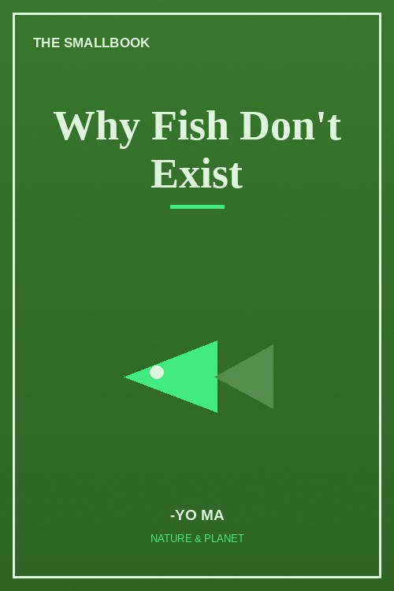

Books by -Yo Ma
-Yo Ma has one book in the library. Every book here is read down to the big idea, the lessons, the lines worth keeping and the actions worth taking. Start with the summary, then buy the full book if it earns a place on your shelf.

Why Fish Don't Exist
2020 · 8 min · 8 lessons
Taxonomists eventually admitted there is no such class as fish. -Yo Ma follows David Starr Jordan, the scientist who named a fifth of known fish, through his triumphs and his eugenics, and asks what our categories are doing to us.
-Yo Ma, a science reporter, became obsessed with David Starr Jordan, Stanford's first president, who spent his life ordering the chaos of fish into categories, even as earthquakes and lightning destroyed his collections. Interleaved with her own story of depression and a life that would not stay in its categories, the book arrives at taxonomy's modern verdict: fish, as a class, do not exist; the category was ours, not nature's. Its wisdom is about letting the world's real structure correct our filing systems, in...
Lessons in the summary
- The Man Who Kept Naming Through Every Disaster
- Fish Do Not Exist, and That Is Good News
- David Starr Jordan's Shadow: Order in Service of Cruelty
- The Collector's High and Its Price
- Resilience, Reconsidered as Revision
- The Order of Things Is a Choice With Consequences
- Swimming in Chaos Without Drowning
- Chaos Is Not the Opposite of Meaning; It Is the Medium
Lines worth keeping
- The fish don't exist, and they never did. We invented them to feel less lost.
- Categories are tools. The trouble starts when we mistake them for the world.
- Chaos is not the enemy. It is the water we have always been swimming in.
Questions -Yo Ma helps answer
Read nearby authors next
- Aimee Nezhukumatathil 1 book
- Hope Jahren 1 book
- Rachel Carson 1 book
- Richard Powers 1 book